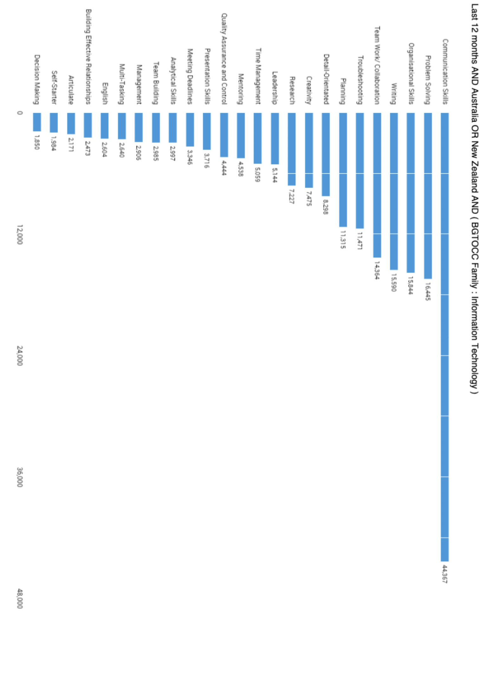

Having looked at the Burning Glass data, has your opinion of your ideal job changed? Why or why not?
Benjamin: The data revealed my assumption that anyone who is qualified to fill the position of engineering/project manager is highly sought after. This is mainly due to the fact that people in this position have a lot of experience with systems and therefore can lead a team of engineers to make a desired system. And leadership is a very high level skill.
Irene: Having looked at the Burning Glass Data my opinion of my ideal job hasn’t changed, as although the position of Penetration Tester isn’t ranked very highly in terms of demand from employers, the cybersecurity field is still evolving with the development of new technology, and thus I believe that this position will soon be highly sought after depending on the needs of employers to ensure the security of their systems. Additionally, since the role of Penetration Tester requires such specialized skills, the challenge of gaining those skills gives me enough
Bharath: Having looked at the data my opinion hasn't changed on my ideal job of becoming a Business Analyst. Although it is ranked 44th from the burning glass data in 2018, this position was something I researched in my earlier years at university and had my mind set on it. It is a role that requires several years of experience hence I don’t expect to find a job straight after finishing my Bachelors degree this year but rather something I will work towards in the future.
Jacob: The 2018 burning glass data doesn't change my opinion towards my ideal job of IT and Cloud Security Architect as the path I outlined requires skills in multiple programming languages, and management skills. Although SQL and DDL wouldn’t be the biggest focus in a role like this, having an understanding in Database management is a key part of all systems that store data. Most applications on iphones have some form of a database (usually built on CoreData), thus it is essential to have an understanding of how the data attributes are related to each other. Moreover, the role is a high level role that requires lots of experience in different areas of the IT industry that hiring will favour those who gain a diverse range of expertises.
Thomas: After examining the burning glass data my opinion has not changed due to the fact the position of being a software engineer is always high in demand but also highly competitive, this entices me to work harder on my personal skills as a software developer. The position of being a software engineer also provides high wages as a senior software engineer so this would also drive me to stay in the industry and work hard to reach my goals.
Medium article on software roles and titles
actually good background music


Michael: Considering that I don’t have an ideal job and right now, I'm just winging it in life, I'm actually happy with the choice of IT job that I've chosen, With the Service Desk Analyst position/IT consulting being the 5th ranked job within the 2018 burning glass data.